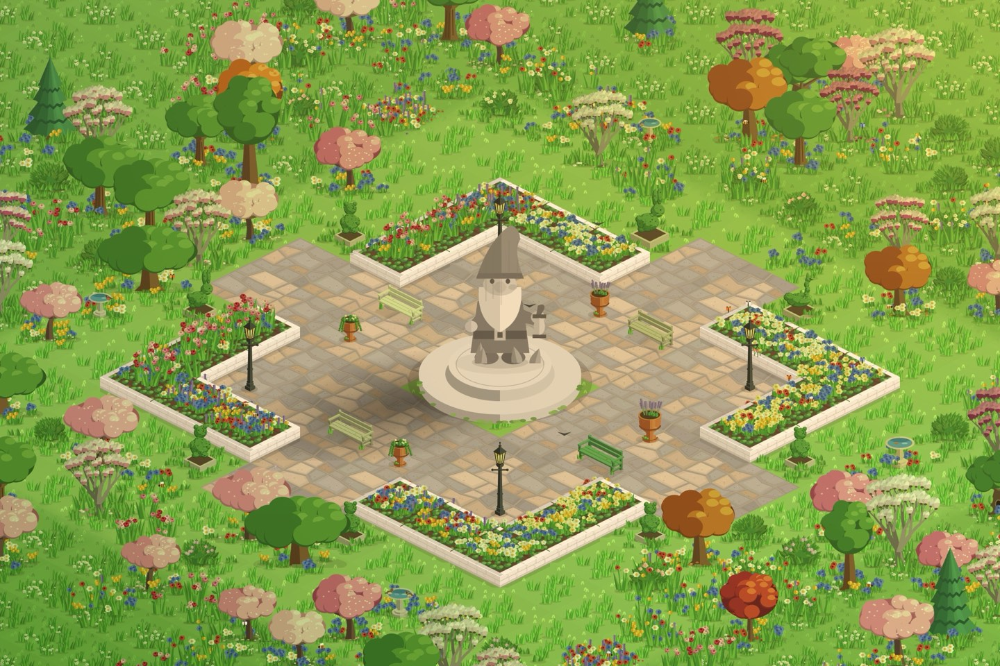

Walking games for iPhone, honestly compared
Nine games that turn your walking into something, what each one is like and who it suits. I make one of them, so I've tried hard to be fair to the rest.

When I started making StepHaven, I played every walking game I could find. They're more different than the name suggests. Some you play out on the walk, phone in hand. Some count your steps all day and you open them later. Some count steps, some count distance, and a couple only count the outings you start.
So here's what each one is, who I think it suits, how it counts your walking and what it costs. StepHaven is in here too, last, since I made it. Everything comes from each game's App Store page and help pages as of October 29, 2026. Prices are from the US App Store, and they change often.
At a glance
| Game | Played | Counts | Cost |
|---|---|---|---|
| Pikmin Bloom | On the walk | Steps | Free, purchases |
| Pokémon GO | On the walk | Distance | Free, purchases |
| Walkr | Later | iPhone steps | Free, ads, purchases |
| Zombies, Run! | On the walk | Distance, per outing | Free to try, paid plan |
| The Walk | Any time | Steps | First episodes free, paid plan |
| MistyWay | Later | Steps | Free, optional Premium |
| Pixel Islands | Later | Steps | Free, optional Premium |
| Fogbreaker | On the walk | Where you go | Free, paid plans |
| StepHaven | Later | Steps, pushes, workouts | Free, optional plan and packs |
Pikmin Bloom
Pikmin Bloom stars Nintendo's Pikmin and comes from the same publisher as Pokémon GO. As you walk, a little crowd of Pikmin follows you and you plant a trail of flowers wherever you go. Seedlings sprout into new Pikmin after a set number of steps, from 1,000 for the common colours up to 10,000 for the big ones. Your Pikmin bring back decor and postcards, you can join weekly challenges with friends who live far away, and regular Community Days get a lot of people out walking at once.
- Suits: anyone who wants something gentle to do on the walk itself, and people who like walking "with" friends.
- Counts: steps, read from Apple Health. Flowers need your location, and its help pages suggest allowing location "Always" if steps aren't counting.
- Costs: free. Coins from $0.99 to $19.99, storage upgrades at $1.99, and the occasional paid event.
Pokémon GO
The best-known walking game of all, and it's been going for ten years. In Pokémon GO you catch Pokémon at real places around you, spin PokéStops, battle at gyms and team up with other players for raids. Walking hatches eggs and earns candy for your buddy Pokémon, and with Adventure Sync on you get rewards each week for the distance you cover.
- Suits: people who like heading out somewhere, collecting, and playing alongside other people in person. There's an enormous amount of it.
- Counts: distance, not steps. While it's open it follows your location; with Adventure Sync, it reads walking distance from Apple Health while it's closed.
- Costs: free. PokéCoins from $0.99 to $99.99, plus event tickets.
Walkr
In Walkr, your steps become fuel for a small spaceship. You fly between planets, take on missions to help their creatures, and collect as you go, with co-pilots, fleets and leagues if you want to play with other people. It's cute, it's colourful, and there's a lot to work through.
- Suits: people who like a collection to fill and a friendly sci-fi look, and who keep their phone on them.
- Counts: steps from the iPhone's own motion sensor. Its help pages say steps counted only by an Apple Watch don't show up.
- Costs: free, with ads ($1.99 removes them). Cubes from $1.99 to $99.99, and a SPARKFUL plan at $7.99 a month or $69.99 a year.
Zombies, Run!
Zombies, Run! is an audio adventure for runs and walks. You're Runner 5 in a zombie apocalypse, and each outing is a mission told through your headphones in between your own music. You can walk, jog or run, outdoors or on a treadmill, and there's a Couch to 5K plan for getting started.
- Suits: people who go out for a set walk or run and want a story pulling them along. It's the closest thing here to a radio drama.
- Counts: the outings you start, tracked by GPS outdoors, with treadmill and Apple Watch support. It isn't an all-day step counter.
- Costs: free to try. A membership unlocks every mission, from $6.99 on the US App Store.
The Walk
The Walk is from the team behind Zombies, Run!, and it's a spy thriller you walk your way through: 65 episodes of escaping a bomb plot by walking the length of the UK. Unlike Zombies, Run!, it counts the walking you do all day, so you just carry your phone and the next part of the story unlocks.
- Suits: story lovers who walk a lot without planning it. Its last update was in June 2024.
- Counts: steps, from Apple Health and your phone's motion sensor.
- Costs: the first five episodes are free, and a subscription unlocks the rest.
MistyWay
MistyWay is a fantasy quest you walk through. Your steps move your hero across a hand-drawn world, clearing fog from the map and opening new regions, with quests, streaks, achievements and leaderboards with friends.
- Suits: RPG fans who want a world to travel, including people who mostly walk indoors or on a treadmill.
- Counts: steps, from your phone's pedometer and Apple Health. It doesn't use GPS, and steps typed in by hand don't count.
- Costs: free, with an optional Premium subscription (weekly, yearly and family plans) and companions you can buy.
Pixel Islands
In Pixel Islands, a pixel-art floating island grows as you walk, through eight stages. Finish one and choose the next, out of 21 worlds. That's most of it, and that's the point.
- Suits: anyone who wants the simplest, calmest game here. It has no ads, and it says it has no streak pressure either.
- Counts: steps from Apple Health, Apple Watch steps included. No GPS.
- Costs: free. Premium opens the legendary worlds, for $9.99 once or a small monthly price.
Fogbreaker
Fogbreaker covers a map of your real surroundings in fog, and walking, running or riding clears it, street by street. There's XP, levels and things to unlock along the way, and friends to compare maps with.
- Suits: explorers who like watching their own neighbourhood fill in, and finding streets they've never walked down.
- Counts: where you go, from your location, including in the background. Connecting Apple Health clears fog along routes you've recorded before.
- Costs: free, with subscriptions from $3.99 a week, $39.99 a year, or $89.99 for life.
StepHaven
This is mine. StepHaven is a cozy town builder where your steps are the money. You walk your day as normal, then open the app and spend what you walked on cottages, trees, ponds, paths, bridges, even a railway. Villagers move in, animals visit, the light follows your clock and the seasons turn. You can design your own houses in the Workshop, and build a shared town with up to three friends.
- Suits: people who like building and decorating, and who'd rather not play a game on the walk itself. There's no map of where you've been and no location. It's also new (October 2026) and iPhone only, on iOS 26.5 or later.
- Counts: steps from Apple Health, so your iPhone, an Apple Watch, or any tracker that saves its steps to Health, counted from midnight on the day you install. Steps typed in by hand don't count. Wheelchair pushes from an Apple Watch count too, at two points a push, and an Ember lit before a ride or a swim turns that workout into points.
- Costs: free, with no ads, one town of your own and one to share. StepHaven+ ($4.99 a month, $29.99 a year or $79.99 once) adds more Workshop shapes and styles and more towns, and themed item packs like Castle & Crown ($9.99) open new sets to build. Steps can't be bought, and everything still costs steps to build.
More on how the counting works: how StepHaven turns your steps into a town and wheelchair pushes and Ember workouts.
How to choose
- You want something to do while you walk: Pokémon GO or Pikmin Bloom, or Fogbreaker if it's the map you care about.
- You want a story in your ears: Zombies, Run! for workouts you set out to do, The Walk for everyday walking.
- You walk indoors or on a treadmill: pick one that counts steps rather than where you go.
- You wear an Apple Watch and leave your phone behind: pick one that reads Apple Health. Most here do.
- You use a wheelchair: StepHaven counts pushes from an Apple Watch in wheelchair mode. For the others, check their help pages before you start.
- You'd rather build something: that's what StepHaven is for.
Spotted something wrong or out of date? Games change all the time, and I'd rather this page be right than flattering. Tell me through the support page and I'll fix it.
StepHaven: Cozy Town Builder
Free on iPhone. No ads, and your steps stay on your phone.
Download on theApp Store